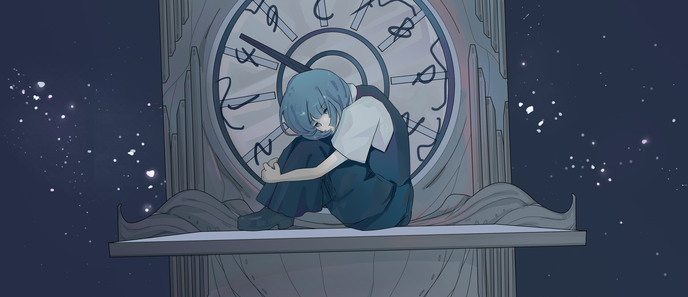

スパーノヴァ

Art by Moshi
作品介绍
《スパーノヴァ》创作于17岁生日前夕，是一首诞生于青春期迷茫阶段的作品。
它并不隶属于任何叙事系列，也早于后来《Ipomoea alba》所展开的情感主线，更像是情绪宇宙尚未形成之前的一次内部坍缩。
整首歌建立在高度虚构的精神空间之中。
歌词并不指向任何具体对象，而更接近于自我投射、自我分裂后的另一面，一种既想靠近、又无法理解的内在存在。
“時計台”亦是如此。
它并非现实场景，而是时间、存在与孤立感的象征结构，在那座并不存在的钟楼下，个体被迫直面自我在广袤宇宙尺度中的渺小与失重。
音乐结构上，本曲采用混合拍推进，这是我早期创作中相当偏爱的节奏语言。
段落间的张力变化与情绪膨胀轨迹，某种程度上也呼应了超新星这一标题所隐含的爆发—扩张—坍缩意象。
后半段编曲中，有一处段落带有对因可（Inchaos）《白令海》氛围的致意式模仿。
作品发布后，因可吉他手爱碳老师曾表示对这首歌的喜欢，有过索要分轨进行再混音尝试，对当时的我而言，这是一次意外而惊喜珍贵的回忆。
《スパーノヴァ》整体呈现出极深的蓝色质感。
它的情绪并不指向具体事件，而是一种存在层面的压迫、膨胀与消散。
那些看似极端的语句，更接近青春期内部张力的文学化表达，而非现实情境的直译。
若说后来许多作品是在讲述“失去谁”，
那么《スパーノヴァ》所记录的，则是在尚未投入进任何人之前，个体如何先与自身的空洞对视。
歌词（Part 1）
広大な宇宙に比べて
自分が何者かわからない
直面したくない
挫折感に飲まれてく
あの予期しないこと
後悔だらけだった
昨日と同じ
何も知らない灰色
時計台で私は たまには夜明けの青に染まる
夢から覚めたような
邪魔な感情をすべて消したい
暗闇で一人になるまで
雑踏から離れる
静かに漂っている
音もなく
夜空に隠れている
切に闇を破りたい
できないと気づいたときに
飽和してゆく
ものが大嫌いだな
歌词（Part 2）
「時間が命を食べてしまう」
「私たちの心を食い荒らす」
時計台で私は たまには夜明けの青に染まる
夢から覚めたような
邪魔な感情をすべて消したい
暗闇で一人になるまで
いつまで経っても自分になれない
思い出せば、きっと君のせいだ
直らない手癖と終わったパーティー、
だから、どうか、どうか、どうか殺してくれ
膨張し、崩れ落ち、消える